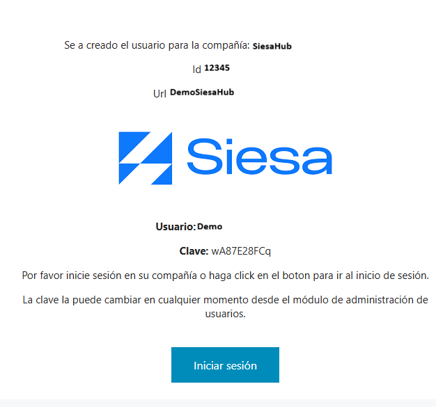
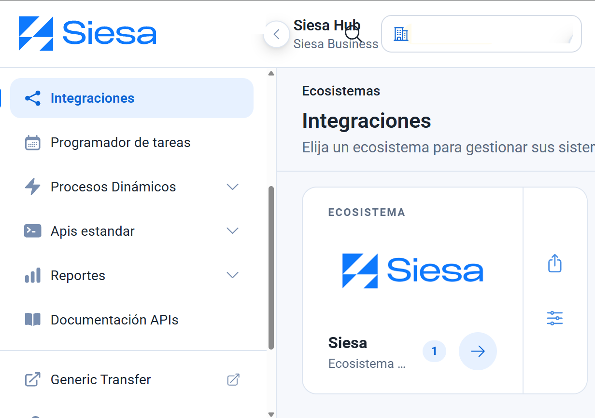
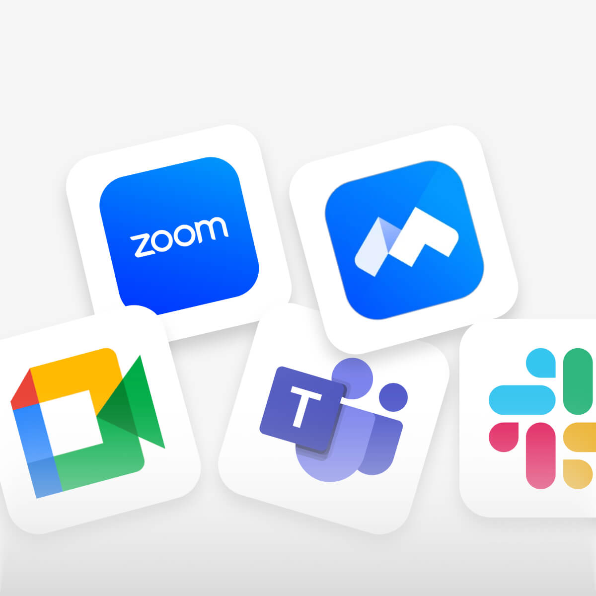

¿Qué es Siesa Hub?
Siesa Hub es la plataforma unificada de APIs que actúa como capa de gobierno entre el ERP y todo el ecosistema digital de las empresas — reemplazando integraciones punto a punto por una arquitectura central, gobernada y escalable.
Conozca el proceso de implementación, capacitación y puesta en marcha de Siesa Hub. Esta guía le permitirá completar correctamente todas las actividades requeridas para iniciar la operación de la plataforma.
Este portal ha sido diseñado para acompañar a los clientes durante el proceso de implementación de Siesa Hub. Aquí encontrará las actividades, responsabilidades, documentación y recursos necesarios para lograr una puesta en marcha exitosa.
Siesa Hub es la plataforma unificada de APIs que actúa como capa de gobierno entre el ERP y todo el ecosistema digital de las empresas — reemplazando integraciones punto a punto por una arquitectura central, gobernada y escalable.
Con Siesa Hub centralizas y controlas la comunicación entre tu ERP y cualquier aplicación externa desde un único entorno:

Correo de inicio

Credenciales ERP

Configuración

Preparación y documentación
Antes de la sesión de capacitación con el equipo de Siesa, es importante que explore la plataforma, valide sus accesos y consulte la documentación disponible.
Esto permitirá aprovechar al máximo el acompañamiento técnico y resolver inquietudes específicas de su proceso de integración.
Ingrese al ambiente de pruebas, valide sus credenciales y explore las funcionalidades disponibles.
Verifique que cuenta con los accesos asignados al ambiente CORE y conozca su disponibilidad.
Explore los siguientes recursos para familiarizarse con las principales funcionalidades y herramientas de Siesa Hub.
Conozca cómo administrar usuarios, asignar permisos y gestionar accesos a los servicios.
Consultar guíaConsulte los requisitos y conceptos relacionados con la conexión entre Siesa Hub y el ERP.
Consultar guíaAprenda sobre el documentador, consultas, filtros y consumo de servicios API.
Consultar guíaUna vez tenga acceso, familiarícese con las funcionalidades principales.
Antes de asistir a la sesión técnica, asegúrese de:
No comparta contraseñas, tokens, llaves de acceso ni información sensible a través de canales no autorizados.
Los usuarios del cliente cuentan con acceso validado a los ambientes habilitados, conocen las funcionalidades básicas de Siesa Hub, han revisado la documentación de apoyo y tienen identificadas sus inquietudes para la sesión técnica.

Capacitación Funcional y Técnica
Cierre
Si durante la configuración o el uso de Siesa Hub presenta dudas o inconvenientes, puede contactar al equipo de soporte a través de los canales definidos durante el proceso de implementación.